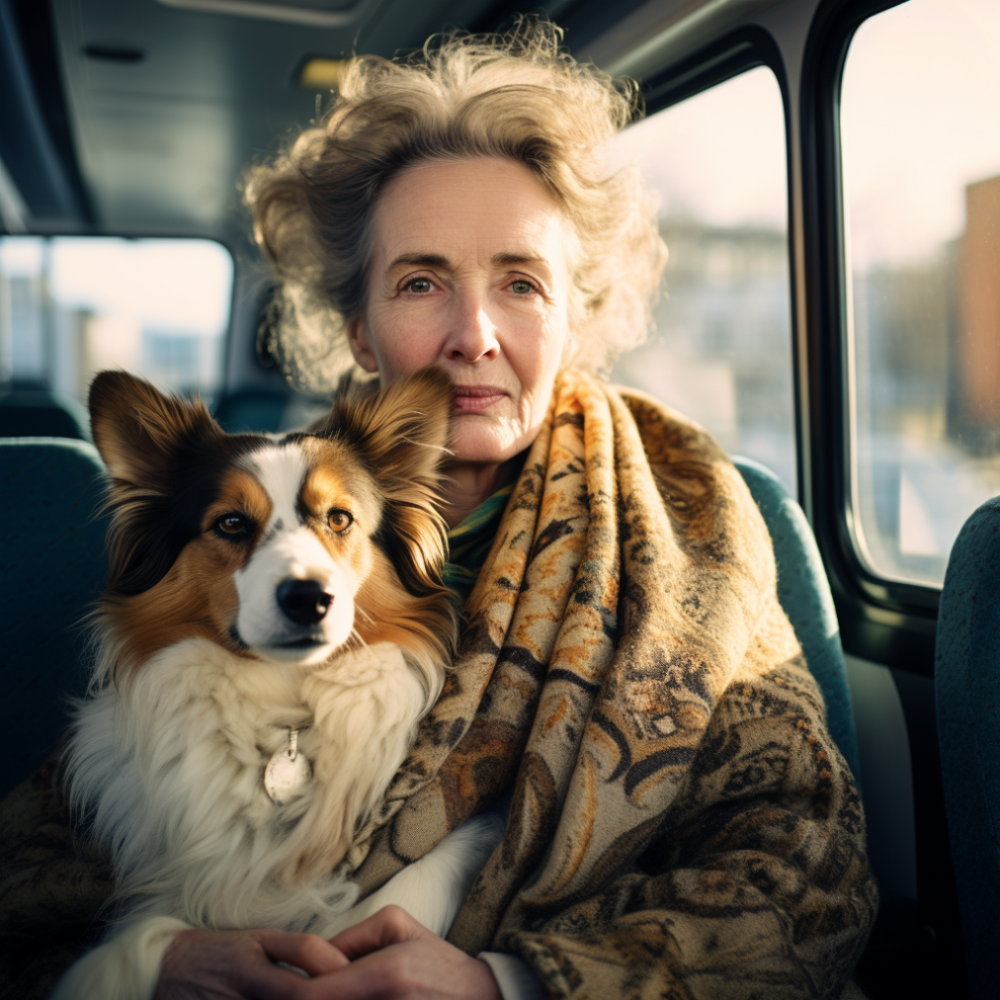
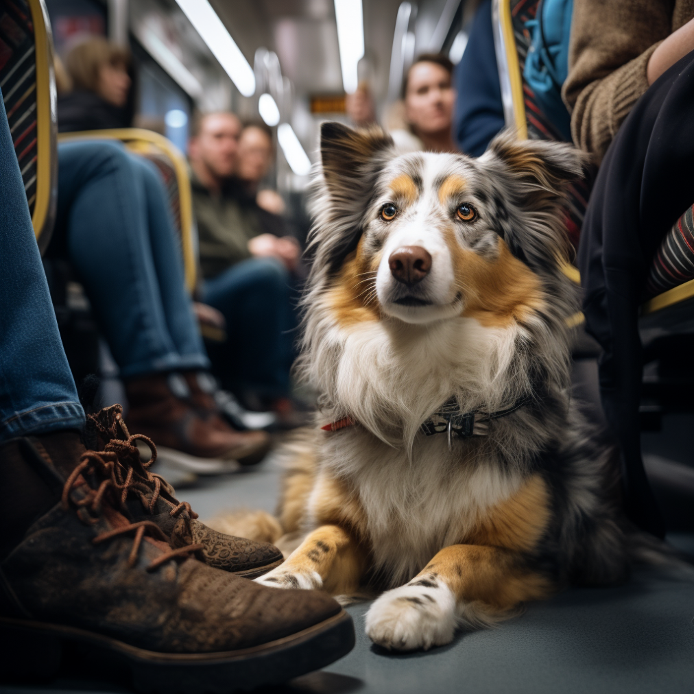
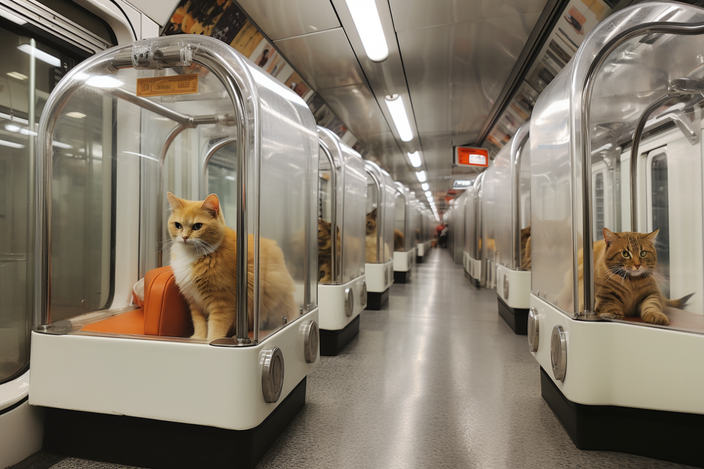
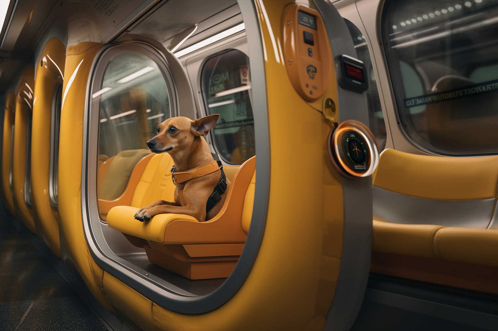

Personas are like muses that inspire designers.
We get to pick personas aiming to evoke a sense of empathy in the viewer. It's all about getting you exposed to a range of emotions tied to certain groups of people.
Our mission is to elevate the overall experience by designing spaces that not only resonate emotionally but also provide the highest convenience for users in their day-to-day lives.

Now that you understand our mission, let me introduce you to Laura — an elegant, well-dressed woman in her sixties, hugging an Australian Shepherd dog in her hands on the bus from Lausanne's sunny district.
Laura's purpose for the long journey is heartfelt; she needs to take her furry companion to the vet, situated on the other side of town. Anxiety already courses through her because public transport lacks dedicated spaces for dogs, and she senses disapproval from fellow commuters when her dog accompanies her on the metro or bus.
In this story we can not notice the second persona. Let me introduce you to the charming Australian Shepherd named Dono, who shares a deep connection with Laura.

Meet Dono, lying contentedly on the bus floor, ever-friendly and understanding of the challenges of commuting, as he prefers open spaces for play with his owner.
The absence of dedicated spaces for those travelling with animals on public transport poses a significant challenge. This challenge becomes even more noticeable during peak times when the transport system is bustling with noise or experiences sudden halts. In such scenarios, an animal's reactions can be unpredictable, potentially posing risks to both the pet and fellow passengers. Furthermore, when you're compelled to hold your furry friend in your arms, your ability to respond swiftly in hazardous situations or emergencies is compromised, heightening the associated risks.

Imagine a cozy corner in public transport made just for our furry friends – dogs and cats. In these special spots, owners can stand or sit nearby and watch over their pets. There are even toys to keep the animals entertained. Plus, these areas are designed to block out loud noises, making it a calm and stress-free space for our beloved animal companions during the journey.

For the dog, the journey becomes a delightful exploration with the calming hues, creating a visually appealing and comfortable environment. The futuristic urban setting adds a touch of excitement and curiosity to the ride.
From a human perspective, the journey takes on an aesthetic and relaxing quality, blending the beauty of nature with the advancements of technology.